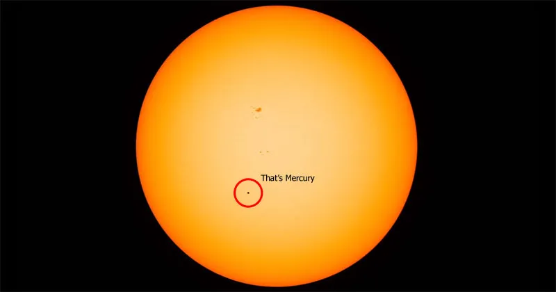

Mercury
Mercury is the closest planet to the Sun, and also the smallest. It has no moons or rings. Mercury spins very slowly. It turns exactly three times for every two trips around the Sun, so one day there (sunrise to sunrise) lasts about 176 Earth days! It is the second hottest planet in our solar system (keep looking through the other planets to find out the hottest). The side facing the Sun can reach temperatures of up to 427°C, while the side facing away can drop as low as -173°C. This happens because Mercury has almost no atmosphere to trap the heat.
| Mercury Facts | |
|---|---|
| Diameter | 4,879 km |
| Mass | 3.30 × 1023 kg (0.06 Earths) |
| Moons | None |
| Orbit Distance | 57,909,227 km (0.39 AU) |
| Orbit Period | 88 days |
| Surface Temperature | -173°C to 427°C |
This is what Mercury looks like compared to the Sun
